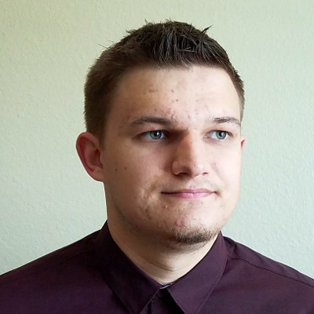

I am a college student passionate in joining the field of computer engineering and IT. I am currently working towards a bachelor degree in Computer Science with a concentration in Game Development and am exploring the opportunity to learn about software
development. I have a passion for technology and its applications in our society in terms of applications, interactive media, and tools. I have and continue to research for opportunities to gain real world experience in Software Engineering,
Computer Science, Human-Computer Interaction, Computer Simulations, Computer Graphics, and general Computer Research.
I am currently seeking an opportunity to develop understanding and gain experience in the software and game development fields. I am looking to learn from professionals and further strengthen my knowledge in the field of Computer Science while also aiding
a team to accomplish goals more quickly and to share ideas for the later advancement in the development of graphics, simulations, and computer research. I have a positive attitude towards learning and contributing to research and am an
energetic and quick learner.

Daniel Kharlamov
Student at CSUMB
Bachelor in Computer Science
Marina, Califonia
Brief Résumé
Teaching Assistant for Graphics Programming
Califonia State University, Monterey Bay
Aug 2017 - Present
Currently assisting students in learning Computer Graphics and Graphics Programming.
Undergraduate Researcher
Califonia State University, Monterey Bay
Jun 2017 - Aug 2017
Working in computer graphics and computer simulations to simulate aerodynamics. Using technologies like C++, DirectX, and Compute Shaders.
Game Jam Teaching Assistant
Califonia State University, Monterey Bay
Jun 2017
Wrote a framework to help teach students about developing in virtual reality in the Unity Engine. This framework aimed and succeeded to make it easy for students to make a virtual reality game in a week. During the Game Jam, I helped students solve problems
with the Unity Engine, general virtual reality concepts, and sometimes issues with art assets and the implementation of game features.
Undergraduate Researcher
Califonia State University, Monterey Bay
May 2016 - Dec 2016
Researched and developed TickTockRay, a solution to 3D pointing on mobile virtual reality using a smartwatch. Used technologies like the Android SDK, Unity Engine, C#, Java, and AndroidJNI. This research was published in the form of a poster at SUI'16
and VRST'16 and as a demo at SUI'16.
Software Development Engineer in Test
YottaMark
Jun 2014 - Aug 2014
Tested mobile applications for both Android and iOS using frameworks like Appium in Java. Developed models to test features of various applications with the use of TestNg and Jenkins for complete automation. Worked on web based tests using Ruby and RSpec.
Gained Experience with industry tools like Jenkins, Jira, TestNg, JUnit, Ruby, Ruby RSpec. Worked in an Agile workspace with bullpen layout geared towards communication between engineers. Daily Scrums were held to discuss progress and results.